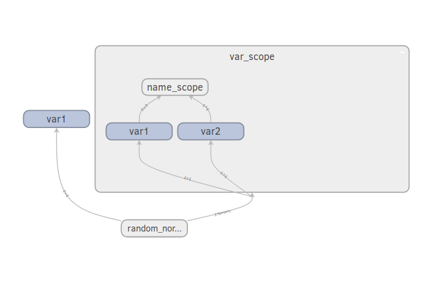

tf.get_variable
tf.get_variable은 Variable을 만들기 전에 같은 이름의 Variable이 있는지 확인할 수 있습니다. tf.variable_scope으로 같은 이름의 Variable이 있는지 찾을 범위를 설정하고, 만약 있다면 재사용할 것인지를 결정할 수 있습니다. 재사용 하고 싶다면 reuse=tf.AUTO_REUSE 값을 건내줍니다. tf.name_scope은 영향을 주지 않습니다. 아래 그래프를 보시면 variable scope 안쪽과 바깥쪽에서 호출된 var1은 공유되지 않지만, 같은 variable scope 안에서 두번 호출된 var2는 공유되는 것을 확인할 수 있습니다.
|
|

tf.get_variabel을 통해 그래프를 모듈화 하면 다음과 같은 장단점이 있습니다. 모듈 안쪽에 정의된 Variable값을 모듈 바깥쪽에서 바꾸어 줄 수 있습니다. 동시에 바깥쪽에 정의된 Variable값이 모듈 안쪽에의해 예상치 못하게 바뀔수 있기 때문에 variable_scope을 적절히 정의해 줍니다. 멀티 GPU를 사용해본적이 없어서 알 수는 없지만, 멀티 GPU를 사용시 변수를 공유하기 쉽다는 장점이 있다고 합니다.
|
|
사용방법은 tf.Variable과 크게 다르지 않습니다. 단 Variable의 초기화 값을 initalizer값으로 넘겨줍니다. 이 값은 Tensor 뿐만이 아니라 일반적 파이썬이나 numpy 리스트도 가능합니다. collections는 그래프 안에서 이 값이 어떤 포함될 컬렉션을 지정합니다. tf.global_variables_initializer 를 통해 초기화 시킬 수 있도록 [GraphKeys.GLOBAL_VARIABLES] 이 기본값입니다. trainable은 GraphKeys.TRAINABLE_VARIABLES 컬렉션에 포함될 것인지 지정합니다.